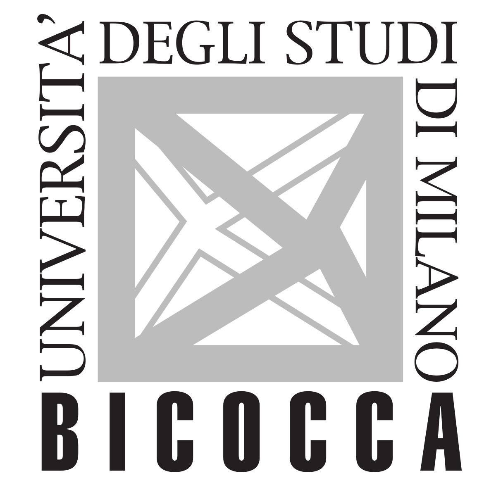
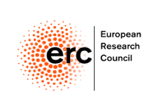

Welcome!
Welcome to the webpage of the COSMIB Research Group! We are a newly formed research group within the Astrophysics Unit of the Physics Department at the University of Milano Bicocca (since September 2020). Our research efforts are devoted to the exploration of Cosmic Structures in the distant universe on different scales - from galaxies to the Cosmic Web - using both theoretical/numerical models and observations with the most advanced astronomical instruments on 8-10m class telescopes. If you want to know more about our group members and research activities, follow the links above.

 Our group is supported by the European Research Council (ERC) Consolidator Grant "CosmicWeb" (PI: S. Cantalupo) and the ERC Starting Grant "FEEDGALAXIES" (PI: M. Fumagalli).